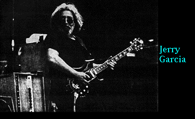
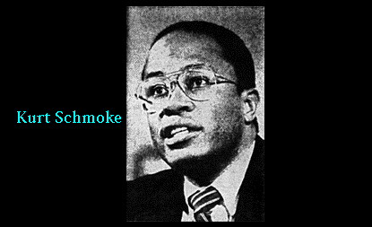
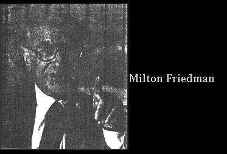
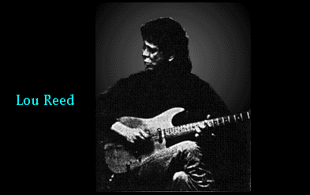
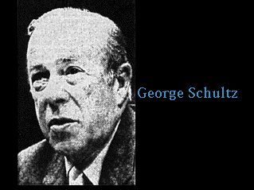

|  |
| |

illustration © Chris Peltier
“In the years to come, the rhetoric of Dope War will replace the rhetoric of Cold War as the justification for foreign military intervention. Instead of sending in the marines, Washington will send in the narcs.”
—“Dope Dictators: The Vietnamization of Mexico, Jamaica, Colombia and the Third World,” HIGH TIMES, March 1977
“We’re in a war we shouldn’t be in and can’t win. The police are victims of this war just as soldiers were the victims in Vietnam.”
—Wesley A. Pomeroy, a lifelong police officer who served as assistant director to the White House’s Office of Drug Abuse Policy under President Carter.
“What we ought to do is try to get at the source of this problem, which is poverty and disillusion, and put our resources behind that and turn it around. I suggest it is time to abolish the prohibitionto cease treating indulgence in mind-alteration as a crime. The result would be the elimination of the profit motive, the gangs, the drug dealers. Obviously, the model is the repeal of Prohibition and the end of Al Capone and Dutch Schultz.”
—US District Judge Robert W. Sweet, in a speech at the Cosmopolitan Club in New York City, December 12, 1989.
“Urine tests! Our pioneer ancestors would piss in their graves at the thought of urine tests to decide whether a man is competent to do his job. The measure of a man’s competence is performance. In the good old days a man’s personal habits were personal and private. Now even a citizen’s blood and urine are subject to arbitrary seizure and search.
“What may lurk behind this colossal red herring of the war against drugs? A war neither likely nor designed to succeed. In politics, if something doesn’t work, that is the best reason to go on doing it. If something looks like it might work, stay well away. A thing like that could make waves, and the boys at the top, they don’t like waves.”
—“Just Say No To Drug Hysteria,” by William S. Burroughs, from the album, Like a Girl, I Want You to Keep Coming (Giorno Poetry Systems Records)
“A small group of drug criminals now probably launders tax-free sums of over $100 billion a year, more than the GNPs of 150 of the 170 Nations of the world.”
—The Economist, April 2, 1988
“Forget the war on drugs. It’s over. Drugs won. There was no way to win it in the first place... Now poor William Bennett is being asked to play the lead in the latest episode of the situation tragedy known as The War on Drugs. He must know the enterprise is doomed... If Bennett has courage, he will come to one dreadful conclusion: we must end the war by legalizing drugs.”
—Pete Hamill, NY Post, March 14, 1989
“It has quickly become received wisdom even in the middlebrow press that the vaunted War on Drugs is a failure, with an admission of futility only a step away. That step would be to call in the entire armed forces, a move the Pentagon has long resisted. Failing full militarization, only one other step remains: rethinking the whole mess in terms of legalization.”
—Charles Paul Freund, The New Republic
“What if Bill Bennett should look at the problem hard in the face and conclude that prudent policy calls for licensing the sale of the drugs side-by-side with a massive national effort to warn against their consumption? If one were to remove from the price of drugs the overhead of sneaking it into the United States, killing or bribing all who stand in the way of this operation, and all who stand in the way of merchandising the drugs in the streets, then the price of it would certainly collapse, and there would be no profit in its sale, save the modest profit of paying the licensed dispenser.”
—William F. Buckley, in his syndicated column
“In the ’60s legalizing drugs could be fairly regarded as another indulgence by a self-indulgent generation. Today, it can be considered as not only pragmatic but necessary. It at least deserves an airing.”
—Thomas Collins, syndicated columnist, from Newsday.
“Any serious approach to this problem (as opposed to the present one) demands a recognition of complexity and ambiguity. We have to compromise between social reality and the dream of a drug free society. We may have to acknowledge that the use of drugs and alcohol has benefits as well as dangers. The main obstacle to thinking about any serious alternative to present policies is that no one in government wants to give up the symbolism of the criminal law or the commitment that has been made over the last 70 years, not only in the United States but all over the world, to treating drugs as a criminal problem.”
—Lester Grinspoon, MD, Associate Professor of Psychiatry, Harvard Medical School, “The Harmfulness of Tax,” Drug Policy 1989-1990: A Reformer’s Catalogue
“Body counts don’t really matter. In the end, we’re just fighting a holding action. We’re taking a lot of prisoners, but we’re not winning the war.”
—US Attorney Gene Anderson of Seattle, Washington, quoted in the Reader, November 18, 1988.
“It is ridiculous going to jail for marijuana. In Pima County, about 75 percent of people between ages of 20 and 40 smoke grass. It is just like Al Capone and prohibition; they do it anyway.”
—Joe Brewster, unsuccessful candidate for Pima County Sheriff, quoted in the Tucson Citizen, April 23, 1988.

“It’s a joke. Greed and the desire to take drugs are two separate things. If you want to separate the two, the thing you do is make drugs legal. It’s the obvious solution. Accept the reality that people do want to change their consciousness, and make an effort to make safer, healthier drugs.”
—Jerry Garcia, Rolling Stone, November 30th,1989.

“Have we failed to consider the lessons of the prohibition era? Now is the time to fight on the only terms the drug underground empire respects — money. Let’s take the profit out of drug trafficking.”
—Kurt L. Schmoke, mayor of Baltimore, at a meeting of the US Conference of Mayors, April 25, 1988

“This plea comes from the bottom of my heart. Every friend of freedom, and I know you are one, must be revolted as I am by the prospect of turning the United States into an armed camp, by the vision of jails filled with casual drug users and of an army of enforcers empowered to invade the liberty of citizens on slight evidence. A country in which shooting down unidentified planes ‘on suspicion’ can be seriously considered as a drug war tactic is not the kind of United States that either you or I want to hand on to future generations.”
—Milton Friedman, Hoover Institution, Stanford University, “An open Letter to Bill Bennett,” The Wall Street Journal, Sept. 7,1989.

“Think what you could do with all the money they spend trying to fight drugs. Legalize it.
“Tax it, make it pure, stop the disease, the killing, the crime. I mean, they can’t stop it ’cos the market for it so gigantic. That’s the bottom line. If they took the illegal profit out of it, that’d hurt them.
“Imagine it — big deal, there’s a drug store. It’d be cheap too. Ok some drugs, I personally think, you should only be able to get when you’re over 50. If you live past 50, you can try Ecstasy or whatever the hell you want . But legalize the shit. Take the taboo and glamour out of it.”
—Lou Reed, New Musical Express (UK), June 10, 1989.

“It seems to me we’re not really going to get anywhere until we can take the criminality out of the drug business and the incentives for criminality out of it... We need at least to consider and examine forms of controlled legalization of Drugs.”
—Former Secretary of State George P. Schultz
This work livicated to Bruddah Jim Carner and Bruddah Jacob Miller.
by Lindsey Bradshaw
“Controlled Substance,” shrieked the mad judge behind the stand.
He looked weary with the gavel in his hand.
“Controlled Substance, yes, this is it,” nodded the cops,
“On with the trial,” they yelled, “Let’s pull out the stops.”
“Controlled Substance!” said the jailer with great relief.
“Controlled Substance?” asked the farmer in disbelief.
“Guilty,” screamed the judge, “I know how to handle that,
I’ll take an eye for an eye, and a tit for a tat.
Guilty, I’ll do my damnedest to see you in jail,
Guilty, I’ll do my damnedest to up your bail.
Guilty, why, I may take your land,
Maybe even your children. Wouldn’t that be grand?
Guilty, I’ll do my damnedest to up your taxes,
And if all these fail, I’ve many such axes.”
There was such a ruckus, and such a commotion,
You would have thought that Moses had just parted the ocean.
This kangaroo court, held with such a lack of love,
Caught the attention of Saint Michael above.
St. Mike thought to himself, “They think it’s about weed,
Freedom is the issue! Controlled Substance, indeed!”
Mike said, “We must do something, and do it right now,
Why, I’ll get some friends, we’ll find out just what and how.
He called for Ms. Liberty, and Bogg the Cosmic Clown.
They said, They’re at it again, Let’s go down!”
At this, the jury was possessed. They said, “We want out.
Controlled substance, indeed!” they began to shout.
Bogg the Clown got the judge with a pie in the face.
“Your honor,” said Mike, “You, sir, are a disgrace.”
Ms. Liberty let loose with a seltzer bottle,
A bus of stonekey cops came in at full throttle.
the ringmaster appeared and said, “Ain’t this dandy,
The only thing this place lacks is cotton candy.”
This circus has lions, freaks, liars, and geeks. It is too loud.
It is on fire! But don’t you dare say so in a crowd.
This circus has plowshares, nowshares, a doubled-edged sword,
And David dancing naked on the altar of the Lord.
“Order in the court,” babbled the judge in a fit,
“You want order?” said the clown. “Why? You started this shit.”
“So you want order? We’ll give you some real quick.”
“Ms. Liberty,” he asked, “Please now, show us a trick.”
She jumped high into the air and did a somersault,
Saying, “Whenever or wherever I land is not my fault.”
Controlled Substance, Controlled Substance, indeed,” said she.
And half way down she turned into a tarbaby.
The tarbaby landed in the judges lap, by heck.
Tarbaby had a sign hanging around her neck.
The sign read “Marijuana” unmistakably.
The sign read “Marijuana, what about me?”
The judge was too slippery to keep her for long,
So like Pontius Pilate, he threw her to the throng.
But the tarbaby flew high into the air, and did a spin.
She uprighted herself and landed with a grin.
Lightly, the baby sat down with the PTA.
She said, “Keep up the good work, I’m not here to stay.
Your wisdom will tell you, you’ve bigger problems with booze.
Keep kids off pot? Sure but let adults choose.”
“Tarbaby, tarbaby, what do you have to say?”
Tarbaby answered, “I’m here to do what I may.”
“Tarbaby, tarbaby, what do you have to do?”
“Only,” said the baby, to answer the question “Who?”
Tarbaby born in blood, tarbaby made of mud.
She was conceived in fire, in the image of God.
Tarbaby flew high, flew high into the sun.
“Let’s put,” she said, “the beasts of hell on the run.”
The tarbaby landed on the doctor’s chest.
Doc tried to give her a urinalysis test.
Tarbaby said, “Sorry, but my body is mine.”
Doc said, “You’re right. I’ll now pass you on down the line.”
Ol’ tarbaby landed in a lawyer’s chair
His first thought was, “Get this out of my hair,
Although, I think I’ll be ready for you some day,
I’m just bringing home the bacon, and you don’t pay.”
This tarbaby is smart, and free, and oh so cool.
This poor innocent baby makes the gangster drool.
The gangster said, “I’m the kind that does as I please,
I like you baby, but I’m gonna put you in a squeeze.”
Baby said, “I’ve met your kind, I know where you are at.”
She looked at him. He turned into a vampire bat.
The tarbaby landed on the face of the law.
Poor man, with a gun, a star, was dumbstruck with awe.
The sheriff said, “This case is just down my line,
I’ll get more men, increase the axes, up the fine.”
Baby said, “I’m just being. It’s your who fights.
I demand my inalienable rights.”
“But,” said the sheriff, “It’s my time to play John Wayne,
Though, John didn’t say it would be such a pain.”
Sheriff found dealing to the baby very hard.
“Well, hot dam” he said, “I need the National Guard!”
The guard came in shooting, as they dropped from the skies.
They came in rooting, but started to drop like flies.
They thought they were strong, lean and mean, or right, at least.
But they were met by the front line generals of the armies of peace.
“Freedom, now or never,” they knew. “Let’s let the fur fly.”
“Order,” whimpered the judge, “I want order in this court.”
The clown lit a joint with the procurator’s torte.
The jury and the coppers began to rumble.
No doubt, the ol’ whorehouse began to crumble.
Now, walking on the ceiling the tarbaby pranced.
All over the courtroom the tarbaby danced.
She said sweetly, “Whatever goes up must come down.”
She jumped high into the air and turned herself around.
She did a stretch and a great big yawn,
“Look around you,” she said, “Tis the time of dawn.
Wake up, wake up, oh gracious, wake up from your nap.”
Ain’t this bodacious, she just landed in your lap.
the authorized on-line version of Jack Herer’s “The Emperor Wears No Clothes”
| previous page | Appendix | next page |
|
 |
 |
 |
 |